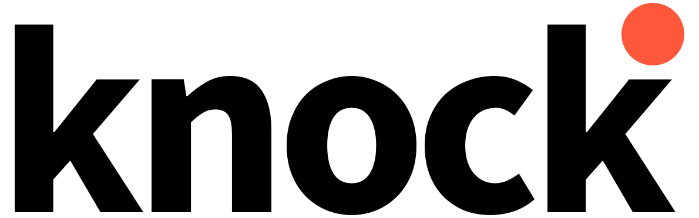

Agentic Onboarding
What changes when your new users are.. agents
Head of Growth at Amplitude
Sept 15, 2026

Agenda
- 1Onboarding 101
- 2Acquisition.. find › pick › sign up
- 3Activation.. setup › aha › habit
- 4Demo.. an agent runs the funnel
- 5Measurement.. what means success
Onboarding 101
The growth funnel, end to end, for a human
Acquisition
Where they come from. Some channels bring intent, some bring volume.
Activation
Not a moment. A chain, and the chain predicts retention.
Engagement
Breadth and depth of use once the habit exists.
Monetization
Where the value exchange becomes money. Gate, meter, bill.
Acquisition · Find
Find › Pick › Sign up
Your docs are your homepage now. The question used to be "can a person find our website?" Now it's "can an agent find the official path, understand it, and execute it correctly?"
Where discovery moved
- Docs, package READMEs, skills, marketplaces, public repos.
- Community answers and third-party citations. These decide whether an agent can even use you.
- A beautiful marketing site with maze docs is invisible to the reader that matters now.
Mintlify, 2026, share of documentation requests across their hosted docs sites, agent user-agents vs browsers.
Acquisition · Pick
Find › Pick › Sign up
Agents choose from what they've already read. An agent picks from training data that is six to eighteen months old. Whatever the internet said about you last year is what gets you picked this year.
- A homepage refresh does not fix this. It is a corpus problem, not a positioning problem.
- Share of voice now has a twin: agent pick rate. The levers are docs, READMEs, community answers, and build-in-public posts. Not ad spend.
Acquisition · Sign up
Find › Pick › Sign up
One path, not a menu. Most setup is a menu of competing routes when the customer wants one recommendation. A human triangulates. An agent guesses, and every implicit judgment call is a place it guesses wrong.
| Door | What the agent has to guess | Status |
|---|---|---|
| Agent instruction in the docs | Nothing. One stable instruction, a versioned skill it can run. | One of five |
| README | Whether it is current, and whether it is the same path as the docs. | One of five |
| Code snippet | Which project, which key, which version. | One of five |
| UI wizard | It cannot click through it at all. | One of five |
| Support ticket | A human is now in the loop. Not agentic. | One of five |
One primary door. Side door: repo connection. Quiet fallback: the manual snippet. Same setup logic and same verification behind all three.
Activation · Setup
Setup › Aha › Habit
Setup means the system works. A human gets a wizard and a checklist. An agent gets one instruction and tools it cannot guess wrong with.
| Step | What happens | Who does the work |
|---|---|---|
| 1 | State intent: "instrument checkout for this business" | Human, one sentence |
| 2 | Find the instruction: one stable path, a versioned skill | Agent |
| 3 | Run deterministic tools: auth, credentials, project, install | Agent, no guessing |
| 4 | Configure: taxonomy, events, first send | Agent |
The bar is not fewer clicks. It is less human work. If the first task fails, the agent moves to the next product and never tells you.
Activation · Aha
Setup › Aha › Habit
Agents don't get an aha. They finish or they leave. The human aha is a feeling. The agent version is a verified outcome with the next action named.
Verify
Send a synthetic signal. Get a validation ID back. Confirm receipt. The skill checks its own work and reports what it could not verify.
First value
A dashboard with real data in it, and the next action named. Installed is not the finish line.
Verification is the step everyone skips: forty events instrumented, twelve silently wrong, found in a review three months later.
Activation · Habit
Setup › Aha › Habit
Habit is a trigger, not a feeling. A human comes back because the product is part of their week. An agent comes back because something called it.
Schedule
A recurring job: the weekly report, the nightly sync, the Monday audit.
Trigger
A webhook or an event: a new deploy, a new customer, a threshold crossed.
Handoff
A human asks for the next thing, and the agent already has the setup and the credentials.
The habit metric gets a twin too: tasks completed without a human, and how often. Design the trigger, or there is no habit.
Live
A quarter of setup in one session
Point an agent at a scratch repo. Watch it find the path, run the skill, verify, and hand a human a dashboard. Messy legacy codebases still need people. The interesting part is where the work moved.
Simulated session for rehearsal. On the night this panel is the cue to switch to the live screen.
Measurement
Same funnel, new numbers
The old metric is already in your dashboard. The new one has no old-world twin.
| Stage | Old metric | Agent metric | Why it matters |
|---|---|---|---|
| Find | Organic traffic | Agent share of docs traffic | Tells you who is actually reading |
| Pick | Share of voice | Agent pick rate | Training data is the new search results page |
| Sign up | Signup conversion | Hands-off completion rate | Zero human steps, or it isn't agentic |
| Activate | Time to aha | Time to first trusted outcome, verification rate | "It ran" is not "it worked" |
| All of it | A/B test on the page | Conversion by instruction version | Your docs are the experiment now |
No numbers on this table on purpose. The agent metrics are definitions, not results. Setup completion is not activation and a first signal is not value: compare retention of completers to non-completers before claiming anything.
This week
Point an agent at your own docs
One hour. You will learn more about your funnel than a quarter of dashboards.
Do
Open a coding agent. Ask it to implement your product end to end in a scratch repo. Do not help.
Write down
Every stall, guess, and quiet wrong turn. That list is your onboarding roadmap, and it's more honest than any survey you'll run this year.
Press ? for the key map. Slides are deep-linkable by number in the URL.